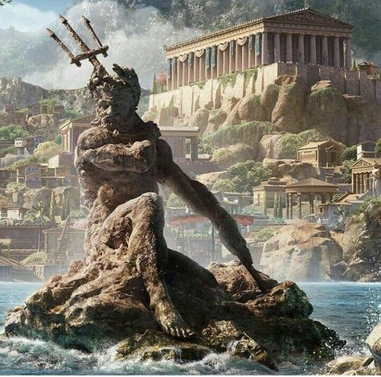

ბერძნული ხელოვნება მოიცავს მხატვრობას, ქანდაკებას, არქიტექტურასა და სხვა სხვადასხვა ხელოვნების დარგებს, რომელთაც უდიდესი გავლენა ჰქონდათ ანტიკურ სამყაროზე და რომელსაც ჩვენ დღესაც ვაფასებთ. ეს ხელოვნება იყო იდეალიზაციისა და სიმეტრიის სინთეზი, რაც ზუსტად გამოხატავდა ადამიანის სხეულის და სულიერი მდგომარეობის სილამაზეს.
ბერძნული ქანდაკებები
ბერძნული ქანდაკება იყო ერთ-ერთი ყველაზე აღიარებული ხელოვნების სახეობა. ბერძენი მოქანდაკეები, როგორიცაა პოლიკლესისა და ფიდიასი, ცნობილნი არიან იმით, რომ მათ შექმნეს იდეალურად პროპორციული, ჰარმონიული და ხშირად ღმერთების ან გმირების გამოსახულებები. ბერძნული ქანდაკების ერთ-ერთი გამორჩეული მაგალითია "დორიფოროსი" (ლანძოერი), რომელიც პოლიკლესმა შექმნა.
ფიდიასი
ფიდიასი იყო ბერძნული ხელოვნების ერთ-ერთი უდიდესი წარმომადგენელი, რომლის ქანდაკებები, მათ შორის პართენონის ქანდაკება, ატენში განთავსებული იყო. მისი ხელოვნება მკვეთრად გამოხატავდა ღმერთების, გმირებისა და იდეალიზებული ადამიანური სხეულის მშვენიერებას.